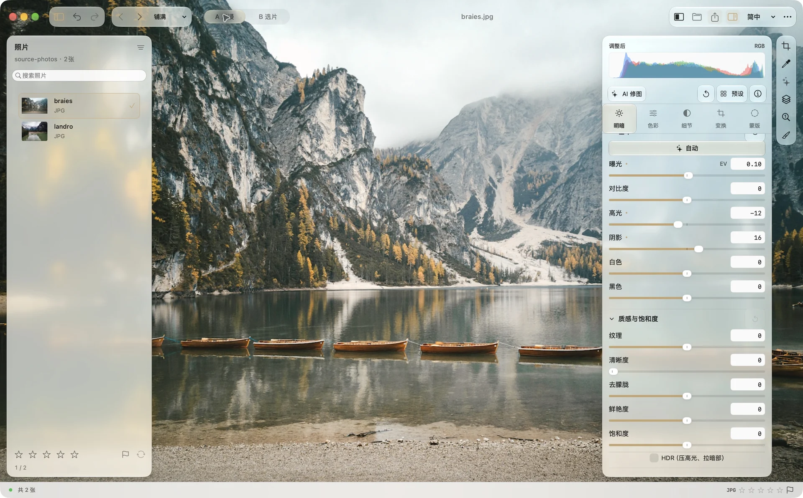
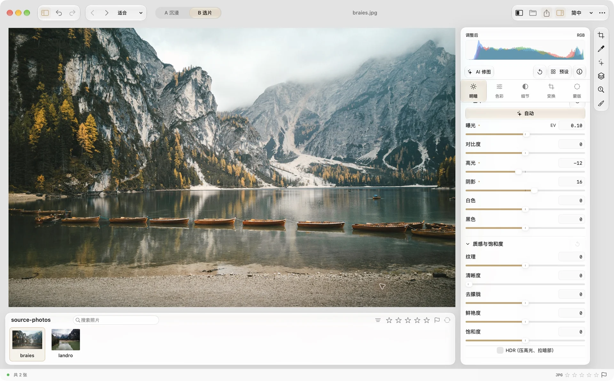
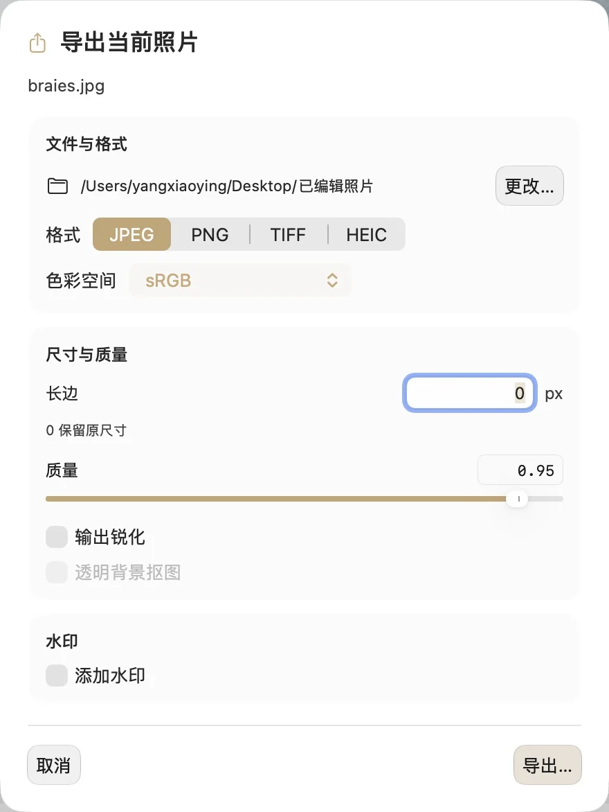
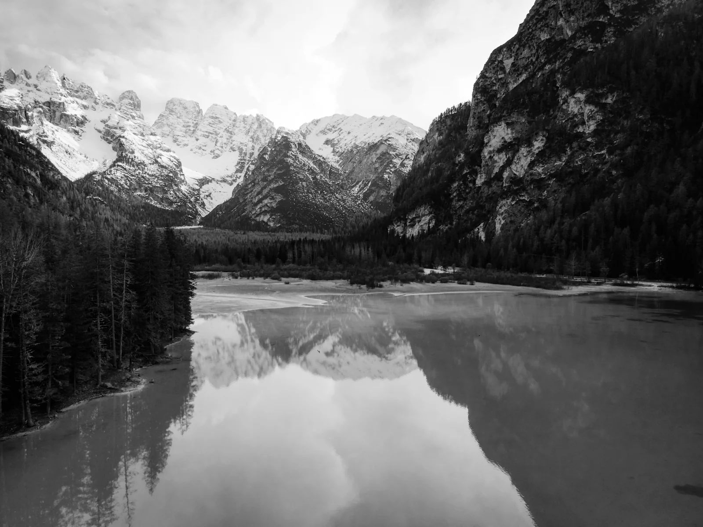

Phos，属于你的
RAW 照片编辑器。


Fuji 400H 2胶片浓度 75% · 曝光 +0.10 EV
左右拖动，看看光线与色彩的变化。
摄影: Willian Justen de Vasconcellos
放心调整。
原片始终是原片。
- 旁档保存，原片不改
- 每次调整可以撤销
- 照片在本机处理
- 直接打开文件夹开始
从找到感觉，
到最后一像素。
顺着摄影的工作流，把风格、精修与输出接起来。
把调整，放在需要的地方。
全局影调、五通道曲线与 HSL 负责整体；九种局部蒙版照顾天空、人物和画面的细节。


两种布局，共享同一份编辑状态。
在网页上试一张
修好了，就交给下一步。
一次导出一张，也能处理一组。按交付需要选择格式、色域、尺寸和水印。
- JPEG / PNG / TIFF / HEIC
- 16 位 TIFF、多色域、批量输出
- 文字与图片水印
亲手试一张：影调、曲线、胶片与蒙版
先修一张试试。
拖动滑杆，试着改变光线与色彩。也可以切换曲线、胶片和渐变蒙版，找到你喜欢的感觉。
交互效果示意
影调与明暗
预览直方图
正在读取网页预览…
色彩
色调曲线
拖动曲线上的圆点就能改形状，画面会实时跟着变；切到「明暗」页拖对比、高光、阴影，它也会一起动。双击复位。
胶片色彩示意
颗粒与暗角
局部调整（蒙版）
线性渐变可拖动
径向渐变拖出椭圆
画笔按住涂抹
颜色 / 亮度范围画布取样
选择主体 · 人物 · 抠图本地 Vision
深度涂绘焦外散景
线性渐变工具已激活：直接拖动画面上的三个圆点——青色改范围，白色移中轴。参数只作用在选区内，和全局调整互不干扰。
浏览器交互示意，使用 SVG 滤镜近似效果；不等同于 Phos 原生 RAW 渲染，也不代表性能测试。
一种照片。
不止一种表达。
先看风格，再看参数。每组都可以拖动比较编辑前后。

Kodak Ektar 100
浓度 65%让山野，多一点日光。
色彩更鲜明，层次仍然自然。适合山野、旅行与有暖光的风景。
曝光 +0.20 EV
高光 −18 · 阴影 +12
摄影: Mushegh Hakobyan
查看完整参数 ↗Fuji 400H 2
浓度 75%让阴天，也有柔和的颜色。
柔和高光，留下青绿与秋色。适合湖泊、树林和阴天的照片。
曝光 +0.10 EV
高光 −12 · 阴影 +16
摄影: Willian Justen de Vasconcellos
查看完整参数 ↗

Kodak T-Max 400
浓度 100%把目光，留给光与形。
用黑白拉开明暗，关注纹理与结构。适合山体、建筑和线条感强的画面。
曝光 +0.10 EV
高光 −10 · 阴影 +8
摄影: Mushegh Hakobyan
查看完整参数 ↗JPEG 摄影样张，经 Phos 实际渲染管线处理，使用单独导入的胶片 LUT。浓度与影调参数见各卡片。
查看软件工作流截图可选 · 实验性本地 AI
说出想法。
先看，再决定。
用中文描述调整要求，让本地模型给出可编辑的参数与局部蒙版建议。满意了，再应用。
-
“整体提亮 0.2 档。”
把要求转成滑杆建议，继续手动微调。
-
“白平衡保持原样。”
说明想保留的调整，对照预览再决定。
-
“只提亮这部分。”
支持局部蒙版建议，先对照效果再写入。
实验性功能，结果需人工核对。约 3.1 GB 底模单独安装；不安装也能正常修图。
了解模型安装输入与建议示意
“仅将曝光滑杆设为 +0.20 EV，其他参数保持原样。”

需要的细节，
也都在这里。
从一根曲线到一次导出，按你的需要继续深入。
先回答几个问题。
Phos 收费吗？
免费，开源，采用 MIT 协议。没有订阅、没有内购、不需要注册账号，也不存在「专业版」的区分。
支持哪些 macOS 版本和机型？
需要 macOS 26.0 或更高版本，且是 Apple 芯片（M 系列）的 Mac。3.2.5 起最低系统从 15.0 提高到 26.0，旧系统请继续使用 3.2.4。当前只提供 Apple 芯片构建，Intel 机型暂不支持。
支持哪些相机的 RAW 文件？
走 macOS 系统内置的 RAW 解码（Core Image 与 ImageIO），凡是系统「预览」能打开的 RAW 都能编辑 —— 覆盖佳能 CR2 / CR3、尼康 NEF、索尼 ARW、富士 RAF、Adobe DNG 等主流格式。
更新的机型能否支持，取决于你所用的 macOS 版本是否已内置该机型的解码器。
会上传我的照片吗？联网是做什么的？
不会上传。照片全程在本机处理，没有云端、没有账号、没有遥测。
唯一的联网行为是启动时向官网查一次最新版本号，请求里不含任何关于你、你的照片或这台 Mac 的信息。
和 Lightroom 有什么不一样？
Phos 是本地优先：不订阅、不云同步、不做移动端，专注把 RAW 解码、影调与色彩、胶片 CLUT 模拟、局部蒙版和批量导出做扎实。
适合希望照片完全留在自己机器上的个人摄影流程。
第一次打开被 macOS 拦住了怎么办？
这是所有未做 Apple 公证的应用都会遇到的统一提示，不是 Phos 独有的问题。双击 Phos → 点弹窗里的「完成」→ 打开「系统设置 → 隐私与安全性」→ 滚到底部点「仍要打开」。
也可以在「终端」执行 xattr -dr com.apple.quarantine /Applications/Phos.app 一次性去掉隔离标记。
支持批量处理吗？
支持。可以批量导入、把一张照片的调整同步到其他照片，并批量导出（含导出水印）。
有 Windows 或 iPad 版吗？
macOS 版是主线。Windows 另有一个实验性移植版（4.4.0，从 macOS 4.4.0 的源码移植），与 macOS 分开维护：Apple 的 Vision 与 Core Image 换成了本地实现，本地 AI 需自行下载底模后在软件内一键准备，也未做代码签名。可以在 下载区 获取。
iPad 版仍在可行性评估阶段，没有可发布的时间表。
怎么反馈问题或参与开发？
到 GitHub 仓库提 Issue 或 Pull Request 都可以。项目用 Swift 编写，基于 Core Image、Vision 与 AppKit。